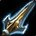
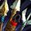
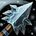
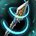
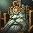

所以猎人的判断跟别的远程不一样——不是「这一波我能打多少」，是「这一波我要不要打」。打不过就重置，等牌转好再来。这个专精的强度有一半在耐心上。
勾掉几条，就有多少胜算。
射击猎人的节奏挂在这三个数字上。


输出时钟 · 两个主力都要施法时间▸所以它比想象中更怕被贴脸：牌多不代表能一边跑一边打满伤害。
每张牌都能让一波攻势作废——判断的核心是「现在值不值得用掉一次重置」。
Diamond Ice（33/50）让冰冻陷阱不可驱散但只有 4 秒——这是个取舍：短但稳，对上有驱散的队伍值得换。
黑暗游侠（Dark Ranger）48/50，哨兵（Sentinel）2 人。这不是推荐，是唯一解。
这条线把
Survival Tactics（50/50）—— 全员必带。
Chimaeral Sting（39/50）连续三段毒液（减速→沉默→减疗）、Diamond Ice（33/50）冰冻陷阱不可驱散但只有 4 秒、Ranger's Finesse（21/50）强化乱射并缩短灵龟守护冷却。
Diamond Ice 是典型的取舍格：不可驱散换更短时长。对面有驱散就换上。
陷阱需要敌人踩上去才触发。所以它要放在对面「必须经过」或「即将去」的位置。
放在脚下等人踩是最常见的浪费——有经验的对手会绕开。
正确认知：牌是用来创造安全输出时间的，不是用来一直跑的。
判据不是血量，是「这一波我能不能赢」——赢不了就重置，等牌转好再开。猎人的强度有一半在这个耐心上。

05 · 控制和打断分开用一个是宠物的，一个是你的▸
06 ·把你的仇恨转给队友。No Hard Feelings 让它以宠物为目标时大幅减伤。
所以在 PvP 里它其实是宠物的保命牌——宠物是你控制链的一环，保住它比转仇恨重要。
爆击几率和爆击伤害大幅提升，主力技能冷却加快。
它是纯输出冷却——开在被追着打的时候等于浪费。先用牌把局面稳住，再开它。
四问对所有敌人是同一套。

天神下凡你是物理远程，招架对你有效——看到就等它过去。
这是这个对局的核心问题——你的伤害要站定。
预判他的接近路线，比事后补救有效。
停手换目标，别把
他能解掉冰冻陷阱——Diamond Ice 的不可驱散在这里有用。
你是物理伤害，被保的目标完全打不动——立刻换目标。
骑士的驱散很强，不可驱散的陷阱在这个对局价值高。
两边都有，看谁交得更值。
这个对局可能拖很久，因为两边都能重来。
镜像的核心是记住他用了什么——牌少的那个先进入没有退路的阶段。
两边输出接近，比的是谁先把牌交完。
你的伤害以物理为主，斗篷对你影响不大。
这张对你才疼——高闪避期间你的射击大量落空。
贼的开场控制链可以用假死整个推掉——这是这个对局最强的一手。
别在他现身前把牌交掉。
短时间的，等它过去。
你的伤害要站定，恐惧很疼。
冷却短，看到抬手就打断。
把他踢出这一波，比硬打穿治疗量现实。
你是物理伤害，护罩对你影响不大。
你的距离随时被破坏——位移要留着应对。
死骑不用贴脸也能给你压力。
死骑机动性差，减速对他很有效。
不是免疫，可以打但效率下降。
萨满能限制你的走位。
放关键控制前先清图腾。
等它自己结束。
法师的控制会打断你的读条。
法师的爆发很集中，免疫一波就赚了。
两个远程互相打断，比的是时机。
术士自愈强，需要持续压制。
你的伤害要站定，恐惧很疼。
假死会清掉你身上的控制——这是应对恐惧链的一手。
术士需要时间叠 DoT，控住就断了他的节奏。
你的爆发很集中，撞上损失大——看到就停手。
武僧机动性高，陷阱难命中。
武僧会绕，要预判他的翻滚方向。
被贴住就重置，别硬站。
不是免疫，可以打但性价比低。
旋风把你摘出去、日光术沉默你——两个都让你输出停摆。
德鲁伊的控制大多要读条。
被控住就假死重置。
都不是免疫，可以打。
陷阱对高机动目标很难命中——要放在他必须落地的位置。
你的读条会被打断。
被贴住就重置，DH 追不上一个假死的猎人。
悬空期间他脱离，但你是远程够得着。
唤魔师能垂直脱离。
唤魔师有大量蓄力技能，打断价值极高。
你们射程接近，比的是打断和控制的时机。
1 · 对面谁会来贴我？射击猎人的伤害要站定，先想好怎么把他推开或者重置这一波。
2 · 对面有没有驱散？决定要不要换 Diamond Ice —— 不可驱散但只有 4 秒，是个取舍。
3 · 陷阱放在哪？要放在对面必经或即将去的位置，不是放脚下等人踩。
每一张都能让对面的一波攻势作废。但它们也都是有限的 —— 用完之前你要想清楚：这一波我到底要不要打。